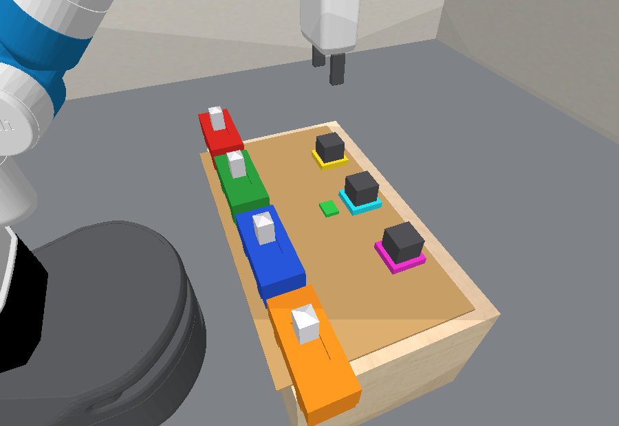

Buttons, lamps, and wiring the robot never sees
pybullet_busyboard - branch busyboard-experiments
Assets: docs/envs/busyboard/

| Lamp | Needs | Plain words |
|---|---|---|
| lamp0 | b0 & b2 | button0 and button2 both on |
| lamp1 | b0 & b1 | button0 and button1 both on |
| lamp2 | b0 & b3 | button0 and button3 both on |
button0 is a shared enabler here: on its own it lights nothing, but nothing lights without it.
| Quantity | Value | Meaning |
|---|---|---|
| One button press | ~22 low-level steps | the unit of "time" the robot can spend |
| Charge gained per driven step | 0.017 | set by busyboard_charge_rate |
| Brightness starts rising at | charge 0.60 | ~36 driven steps, invisible until then |
LampOn becomes true at | brightness 0.50 (charge 0.80) | ~48 driven steps, about two presses later |
| Charge lost per undriven step | 0.050 | full to dark in ~20 steps, under one press |
Interlock. button2 alone, then wait ten seconds: the charge bar never moves. Add button0 and lamp0 charges and lights.
Delayed credit. button0 and button2 are on, lamp0 is charging invisibly. An unrelated button1 is pressed, and lamp0 lights during that press. The button that looks responsible is not.
Right-hand panel in each clip is experimenter-only: true wiring and latent charge. The red mark on each bar is where brightness begins.
Latch everything and wait. Lights lamp0, lamp1 and lamp2. lamp1 was supposed to stay dark, so the task fails.
Objects and features
robot: x, y, z, fingers, roll, tilt, wristbutton: x, y, z, rot, is_onlamp: x, y, z, rot, brightness
(+ charge only when fully observable)Predicates (all visible to the agent)
ButtonOn(b), ButtonOff(b)LampOn(l), LampOff(l): brightness ≥ 0.5HandEmpty(r)Skills (shared factories, no board-specific motion code)
PressButton(r, b): push the slider to the on sideReleaseButton(r, b): push it backWait(r): hold stillPartially observable run (--partially_observable True)
charge feature is dropped. The agent sees only brightness
and has to postulate the accumulator itself.bubbling_level,
but here the latent sits behind an unknown wiring.| Buttons | Lamps | Conditions per lamp | Setting | |
|---|---|---|---|---|
| Train | 3 | 2 | 6 | busyboard_num_{buttons,lamps}_train |
| Test | 4 or 5 | 2 or 3 | 10 or 15 | busyboard_num_{buttons,lamps}_test |
busyboard_fixed_wiring = True), sampled over the largest board (5 buttons, 3 lamps),
then projected onto smaller boards: keep the first lamps, reduce button indices modulo the button count.busyboard_interlock_prob = 0.5).
Two lamps are never wired identically, so every lamp can be told apart by some experiment.init_3buttons_2lamps.png (train size),
init_4buttons_2lamps.png, init_4buttons_3lamps.png (test sizes).| Board | lamp0 needs | lamp1 needs | lamp2 needs |
|---|---|---|---|
| Train 3 buttons, 2 lamps | b1 & b2 | b0 & b1 | - |
| Test 4 buttons, 2 lamps | b0 & b2 | b0 & b1 | - |
| Test 4 buttons, 3 lamps | b0 & b2 | b0 & b1 | b0 & b3 |
| Test 5 buttons, 2 lamps | b2 & b4 | b0 & b1 | - |
| Test 5 buttons, 3 lamps | b2 & b4 | b0 & b1 | b0 & b4 |
| Buttons | Single | Pairs | Conditions per lamp | Distinct 2-lamp wirings | Distinct 3-lamp wirings |
|---|---|---|---|---|---|
| 3 | 3 | 3 | 6 | 30 | 120 |
| 4 | 4 | 6 | 10 | 90 | 720 |
| 5 | 5 | 10 | 15 | 210 | 2730 |
SoleDriver(b, l) and JointDrivers(b1, b2, l).
They reconstruct the wiring from the board size, so the planner and the env cannot drift apart.LightLampSole, LightLampJoint (condition: all drive buttons on, held for the delay),
plus the matching darkening processes.PressButton, ReleaseButton, Wait.oracle_process_planning
and --sesame_check_expected_atoms False.Goal: lamp0 and lamp2 lit, lamp1 dark. Plan: press button0, button2, button3, then wait.
| Oracle | Learning agent | |
|---|---|---|
| Wiring | helper predicates + true params | nothing |
| Charge | true rule and rates | brightness only (PO); charge feature (FO) |
| Base simulator | - | the visible sim core, byte-identical to what its rollouts run
(pybullet_busyboard_base.py), on which no button lights anything |
| Predicates | Button/Lamp On/Off + helpers | Button/Lamp On/Off, HandEmpty |
| Skills | same three skills | |
offline_task_metrics, an experimenter-only channel,
so runs can score how much of the wiring an agent actually recovered.envs/all.yaml
and exp_busyboard.yaml, cherry-picked onto the current harness.agent_oracle_hybrid_sim): should solve.
Its params carry the max-board wiring and project it onto any board, and it has already captured a Wait-based 5-step plan end to end.sim_predicator, agent_sim_learning): expect test failures under the current split.
The agent learns bindings on 3-button boards, and those bindings are wrong on every test board in 5/5 seeds.Options: (a) evaluate on train-sized boards to measure model learning in isolation; (b) project by extension (new buttons and lamps added, old bindings kept) so training transfers partially; (c) keep the split and add test-time structure re-identification, which is the setting this domain was written to motivate.
# Oracle demo (solves 10/10)
python predicators/main.py --env pybullet_busyboard \
--approach oracle_process_planning --seed 0 \
--num_train_tasks 0 --num_test_tasks 10 \
--sesame_check_expected_atoms False
# Experiment sweep (oracle hybrid-sim arm; flip more arms' SKIP in the yaml)
python scripts/local/launch_simp.py -c predicatorv3/exp_busyboard.yaml --parallel
--partially_observable True to hide the charge feature.python predicators/envs/pybullet_busyboard.py (GUI, latches every button in turn).envs/pybullet_busyboard{,_base}.py,
ground_truth_models/busyboard/{predicates,options,processes,gt_simulator,gt_simulator_po}.py,
tests/envs/test_pybullet_busyboard.py.PYTHONPATH=. python docs/envs/busyboard/render_busyboard_media.py